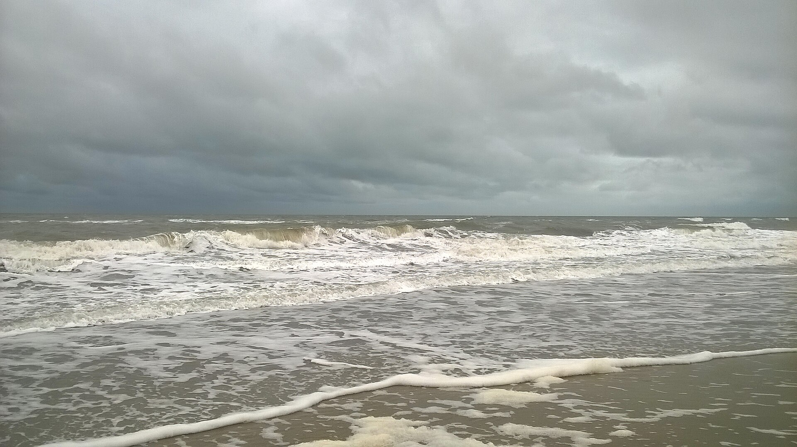

Los vientos del Río de la Plata y las crecidas
En Buenos Aires y en Montevideo, dos palabras alcanzan para cambiar los planes de un fin de semana: sudestada y pampero. Una llega con un ciclón frente a la costa; el otro, con un frente frío. Los dos mueven el aire, pero también mueven el agua, y en un estuario tan particular como el Río de la Plata eso alcanza para inundar barrios enteros.
El Río de la Plata es un estuario enorme, de unos 38 000 km², compartido por la Argentina y el Uruguay [1]. La marea astronómica es muy chica, de menos de medio metro [1]. Hacia adentro, el estuario se angosta y se vuelve poco profundo: en las zonas interiores tiene de 4 a 10 metros de profundidad [1]. Esa combinación, mucha superficie para que sople el viento y poca profundidad para repartir el agua, es lo que lo hace tan sensible.
Cuando el nivel del agua sube por encima de lo que daría la marea, se habla de sobreelevación, o de onda de tormenta. Tiene dos componentes: la que produce la baja presión atmosférica y la que produce el viento al soplar sobre la superficie [1].
La parte de la presión es la más fácil de calcular. Por la ley hidrostática, una caída de 1 hPa en la presión del aire equivale al peso de una columna de agua de alrededor de 1 centímetro: una tormenta con 20 hPa menos que lo normal levanta el agua unos 20 centímetros (cálculos propios). Es poco comparado con lo que se observa.
Lo que más pesa es el viento. Al soplar, arrastra el agua de la superficie con un esfuerzo que crece con el cuadrado de su velocidad [2]:
Si el viento sopla de manera sostenida, el agua se apila contra la costa hasta que la pendiente de la superficie equilibra ese empuje: ρ g h (Δη/L) = τ, con h la profundidad y L el largo del agua expuesta (un balance propio, la versión más simple del problema). Con un viento de 47 km/h, una profundidad de 5 metros y 200 kilómetros de agua expuesta, el agua sube del lado de sotavento algo más de un metro (cálculos propios con valores elegidos). Es el orden de lo que se observa, y explica por qué importa tanto la poca profundidad: con la mitad de profundidad, el agua sube el doble.
Soplar una bandeja: soplá fuerte sobre una bandeja con un poco de agua y vas a ver cómo el agua se junta del otro lado. Si la bandeja tiene poca agua, se apila más. El Río de la Plata es una bandeja de 38 000 km² con un fondo muy cerca de la superficie.
Hay dos situaciones típicas que levantan el agua del Río de la Plata entre 1 y 3 metros [1]. La primera es el fortalecimiento de un ciclón extratropical sobre la costa atlántica: se asocia con vientos fuertes del sudeste, de 35 a 50 km/h, llamados sudestadas, que duran alrededor de 48 horas [1]. Esos vientos empujan el agua hacia las zonas interiores, más angostas y menos profundas, y la apilan sobre las dos costas [1].
En Montevideo, las sobreelevaciones de más de 2 metros ocurren al menos una vez por año desde que se registra el nivel del agua [1]. El máximo del período 1983-2012 fue de 3,20 metros, por debajo de los tres récords históricos: 4,30 metros en julio de 1923, 4,00 en abril de 1914 y 3,50 en noviembre de 1935 [1].
La costa argentina está todavía más expuesta: el lado uruguayo recibe menos esos vientos [1]. En la bahía de Samborombón, al sur del estuario, la costa es una planicie baja, en promedio a un metro sobre el nivel del mar, y las inundaciones durante las sudestadas son frecuentes [3]. En una sudestada fuerte entre febrero y abril de 2010, un acantilado de esa costa retrocedió 1,25 metros en un solo punto [3].

La segunda situación es el paso de un frente frío que llega desde el sur: trae vientos del sudoeste llamados pamperos, que en general duran menos que las sudestadas [1]. Como empujan el agua hacia las mismas zonas interiores, también pueden levantar el nivel [1].
Que el pampero sea un viento fresco tiene que ver con lo que es un frente frío: el borde de una masa de aire más frío, que avanza y desplaza al aire más cálido que había antes (un razonamiento propio). Por eso el pampero suele traer un descenso de la temperatura, y es más breve que la sudestada [1].
Dos vientos, dos escalas de tiempo: la sudestada depende de un ciclón que se fortalece frente a la costa y puede sostener el viento durante días; el pampero, de un frente que pasa. Para el agua, la duración es clave: el viento tiene que soplar el tiempo suficiente para que el río se apile, y por eso las sudestadas suelen producir las crecidas más largas (un razonamiento propio a partir de [1]).
Hay señales de que el problema crece. Escobar y sus colegas definieron la sudestada como una sobreelevación de más de 1,60 metros, y encontraron que su frecuencia subió de 44 casos en la década de 1960 a 79 en la de 1990 [3]. D'Onofrio y sus colegas, con registros horarios de 1905 a 2003, observaron que en los últimos 30 años aumentaron tanto la frecuencia como la duración de las sobreelevaciones [3]. Al mismo tiempo, el nivel medio del agua en Buenos Aires sube: unos 1,6 milímetros por año entre 1905 y 1992 [3].
En la costa uruguaya también se observó un leve aumento de los eventos extremos en la última década del período 1983-2012 [1]. Y como buena parte de la infraestructura no respeta la franja de 250 metros que fija la ley uruguaya, el riesgo de daños es alto [1]. Un río que sube un poco más cada año hace que una misma sudestada llegue más lejos.
Lo que este esquema no cuenta: el nivel del Río de la Plata también depende del caudal del Paraná y del Uruguay, que puede subir mucho con El Niño [1], y de las olas que llegan con el viento [3]. Los pronósticos reales combinan todo eso con modelos numéricos; la cuenta de este artículo sirve para entender el orden de magnitud, no para predecir una crecida (un comentario propio).
La sudestada y el pampero son dos maneras de empujar un estuario ancho y poco profundo. El viento sostenido del sudeste apila el agua durante días; el pampero llega con un frente frío y cambia el tiempo de golpe. Los dos muestran algo que se ve en muchos lugares del mundo: en aguas poco profundas, el viento es capaz de mover el mar.
Pregunta para la comunidad: Con la cuenta del artículo, ¿cuánto subiría el agua con un viento del doble de velocidad? ¿Y qué pasaría con el nivel del río si el viento soplara al revés, desde la costa hacia el mar abierto?